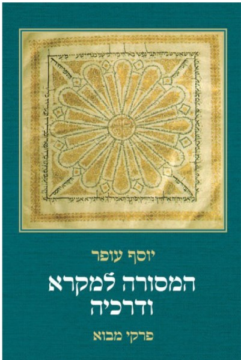
The Masora on Scripture and its Methods, Magnes Press, Jerusalem 2022, 345 pp.
The Masora on Scripture and Its Methods

Fontes et Subsidia ad Bibliam pertinentes 7, Berlin: De Gruyter 2019, 369 pp.
The Babylonian Masorah of the Pentateuch – Its Principles and Methods
Naḥmanides’ Tora Commentary Addenda - Written in the Land of Israel
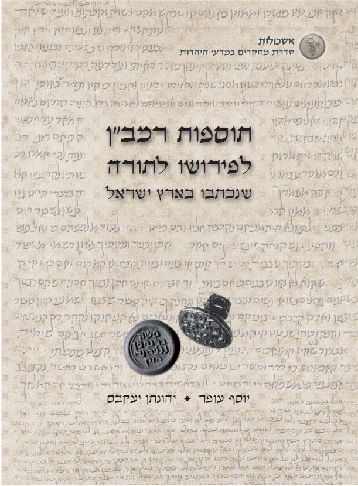
Tosafot Ramban
A companion website to the book and reference files
Table of Contents (PDF)
Table of contents of the second expanded edition - Jerusalem 2022 (PDF)
Scientific supervision of the ‘Jerusalem Crown’ edition of the Hebrew Bible
Keter of Jerusalem A
Keter of Jerusalem B
Editing research books on the Masora
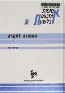
Yevin
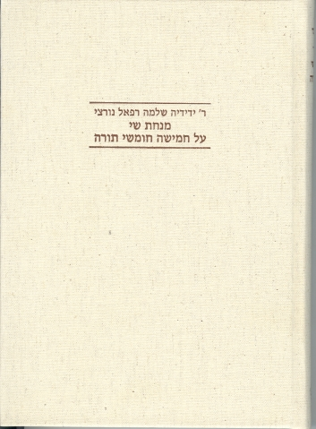
Minhat Shai
Editing Collections of Research Articles
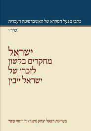
יבין
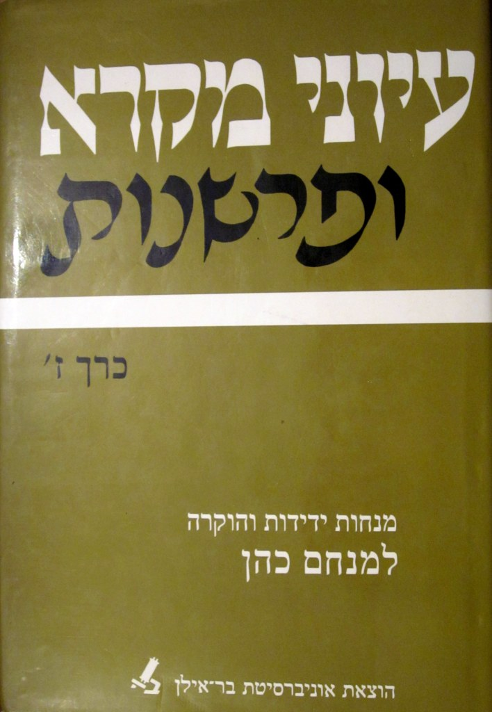
עיוני מקרא
Editing of Rabbi Mordechai Breuer's Books
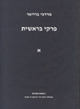
Breshit
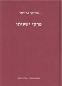
Isaiah
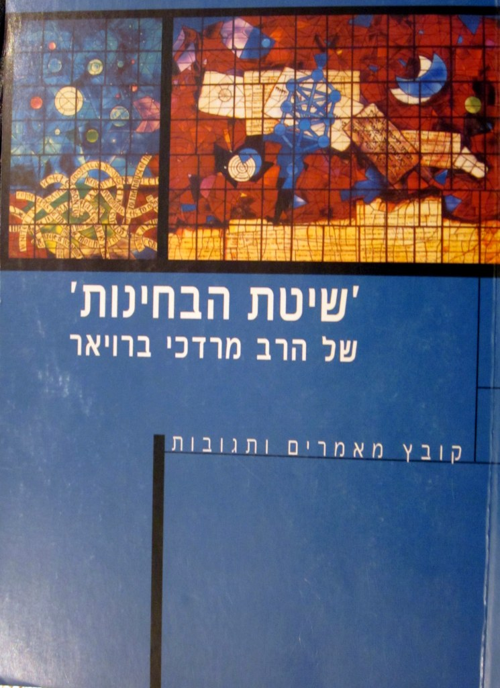
Shitat Habchinot
Partnership in the Editing of periodicals
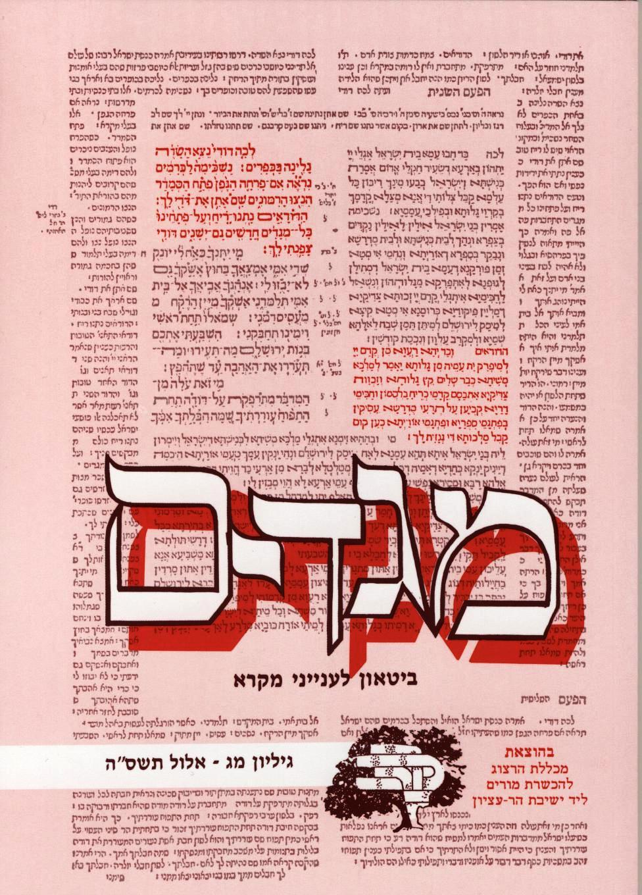
Megadim
Megadim: Journal of Biblical Studies – editor: 1989-2012
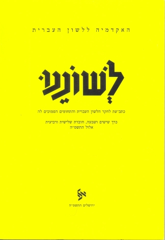
Leshonenu
Editorial Secretary, 2011 - 2022
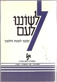
Leshonenu Lam
Editorial board member, 1991 - 2017
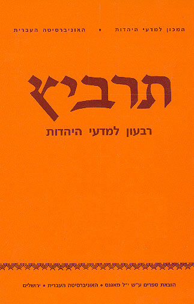
Tarbitz
Editorial secretary, 2008-2009